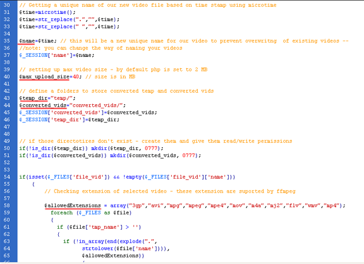
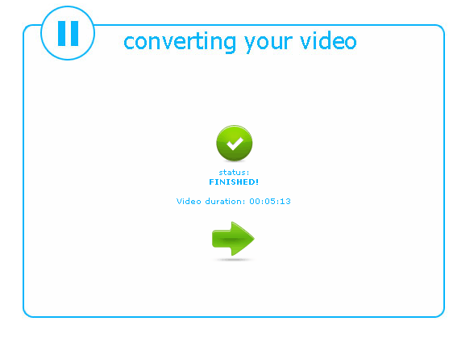

“PHP + ffmpeg video converter” Documentation by igor_s v1.0
“PHP + ffmpeg video converter”
Thank you for purchasing my script. If you have any questions that are beyond the scope of this help file, please feel free to email via my user page contact form here. Thanks so much!
Table of Contents
- PHP Code Explanation
- Requirements (all included in package)
- Installation
- Usage
- How to use it in my project
- Sources
A) PHP Code Explanation - top
How this script works
There are 5 php files for five steps in video converting proces:
Step 1 (step_1.php)
Select a video
- - simple html upload video
- - when upload file is chosen javasript code is activated to check is the extension allowed before start uploading, if is not allowed -> upload button is disabled - file step_1.php lines 19-35
- if everything is OK upload button is clickable upload can be started
Step 2.1 (step_2.php)
Define variables
- - define a new video name / in this example i am using php's microtime() as you can see in step_2.php at lines 31,32,33,35 variable $name is defined
this variable is used for new video name, log file, img file and img convertion log file nane. Also is used for rename input file for preventing special characters in input file name - which mean all files created during process will have same name for specific video - makes easier to find log file or image log file
- set variable $max_upload_size at step_2.php line 40 which represent max input file size (this must be lower value then in php.ini max_input_size)
- define a directories where input ($temp_dir) and output videos($converted_vids) will be placed at step_2.php lines 43,44
- define allowed input formats $allowedExtensions at line 58 (note: those file types must be same as in step_1.php at line 21)
- in this step user is able to set the output format, video and audio quality, these options are placed in form called "choose" at line 144
- if user choose output video format then all options are available:size, video quality, and audio aquality
- if user choose output audio format(mp3) then all options except audio quality are disabled - because there is no need to set up video size and quality if output is audio file

Step 2.2 (step_2_2.php)
Converting video
- In this step ffmpeg is converting video for a choosen format (step_2_2.php lines 47 - 57)
- In step_2_2.php at lines 75-86 javascript is calling listening.php file every second to see is the conversion finished and to read output file size. Results are displayed at step_2_2.php line 86 In Div timeval
- file listening.php is reading log (log/$name.txt) file which ffmpeg is creating to see are there any errors during conversion or is the new file finished
- new video is named with $name variable and stored in $converted_vids folder
- after the conversion is finished, duration time is displayed (listening.php lines 58-65)

Step 3 (step_3.php)
Extract image from video
- based on a total video duration, converted into seconds splits by 2, ffmpeg is extracting the image from new video
- image is named with $name variable and stored in folder video_images/$name.jpg
- step_3.php lines 55-66 contains usefull variables for your projects. there are new video name $_SESSION['name'], type $_SESSION['type'] and duration $_SESSION['duration'], duration in seconds $_SESSION['time_in_seconds'] and img name $_SESSION['image_name']
Step 4 (step_4.php)
Displaying your video / audio
- at this step preview of your video is displayed (.flv only), or download link(all other formats)
- flowplayer is used for .flv formats
B) Installation - top
- copy all files to your web server
-
- download and place ffmpeg.exe in same folder with php files
links for download:
- note for linux users:
ffmpeg on linux is located on different location, usualy at /usr/bin/ffmpeg, therefore you sholud replace files in main directory step_2_2.php and step_3.php with files from for linux users folder.
If your ffmpeg is placed on diferent location (on linux server) then some code must be changed at php files step_2_2.php and step_3.php
in step_2_2.php on lines 47,50,52,54,56 you should replace "/usr/bin/ffmpeg" with your ffmpeg location and do the same in step_3.php at line 40
- change php.ini settings
- max_input_time= -1 --> unlimited time
- post_max_size = 50 --> maximum upload size of a file in MB (in this example 50 is for 50 MB )
- upload_max_filesize= 50 --> same as post_max_size in MB
- in step_2.php at line 40 $max_upload_size=40 is set to 40 MBs, this will prevent uploading files bigger then 40 MB to upload (settings in php.ini and this variable should not be set to same size, this variable must be set to lower size then php.ini)
- for IE 7-8 users add this site to trusted sites
C) Requirements - top
- php 5.x (not tested on lower versions)
- ffmpeg.exe (for windows server or ffmpeg for unix)
- flowplayer (optional)
- jquery
- http://ffmpeg.arrozcru.org/autobuilds/ - latest ffmpeg.exe builds
- http://flowplayer.org/download/index.html - flowplayer
D) Usage - top
I've used the following images, icons or other files as listed.
- 1. start step_1.php
- 2. choose your video file and follow instructions
- 3. only extensions for videos are enabled for upload - if you choose some non-suported extesnion you will get alert window BEFORE upload is started
- 4. Choose output video type and quality settings
- 5. wait until conversion is over - new video duration is displayed
- 6. image for video is created
- 7. preview your video / or download link is shown
- 8. log file is created for every video conversion and image creation
E) How to use it in my project - top
You can include variables about converted video in your project in easy way, all usable varibales are stored in
$_SESSIONS[], all you need is use those sessions in your project. Sessions are listed at the step_3.php at line 55
Sessions which you can use
- video name $_SESSION['name']
- type $_SESSION['type']
- duration $_SESSION['duration']
- duration in seconds $_SESSION['time_in_seconds']
- img name $_SESSION['image_name']
F) Sources - top
- http://ffmpeg.arrozcru.org/autobuilds/ - latest ffmpeg.exe builds
- http://flowplayer.org/download/index.html - flowplayer
- http://jquery.com/ - jquery
Once again, thank you so much for purchasing this application. As I said at the beginning, I'd be glad to help you if you have any questions relating to this theme. No guarantees, but I'll do my best to assist. If you have a more general question relating to the themes on ThemeForest, you might consider visiting the forums and asking your question in the "Item Discussion" section.
Igor Simic
Go To Table of Contents